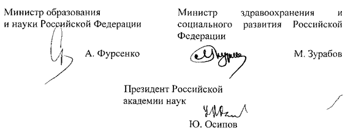

МИНИСТЕРСТВО МИНИСТЕРСТВО
ОБРАЗОВАНИЯ И НАУКИ ЗДРАВООХРАНЕНИЯ И
РОССИЙСКОЙ ФЕДЕРАЦИИ СОЦИАЛЬНОГО РАЗВИТИЯ
(Минобрнауки России) РОССИЙСКОЙ ФЕДЕРАЦИИ
(Минздравсоцразвития России)
РОССИЙСКАЯ АКАДЕМИЯ НАУК (РАН)
ПРИКАЗ
«23» мая 2007 г. № 144/352/33
Об утверждении Положения о порядке аттестации научных
работников организаций, подведомственных
Российской академии наук
Во исполнение пункта 4 постановления Правительства Российской Федерации от 22 апреля 2006 г. № 236 «О реализации в 2006 - 2008 годах пилотного проекта совершенствования системы оплаты труда научных работников и руководителей научных учреждений и научных работников научных центров Российской академии наук» (Собрание законодательства Российской Федерации, 2006, № 18, ст.2003) приказываем:
1. Утвердить прилагаемое Положение о порядке аттестации научных работников организаций, подведомственных Российской академии наук.
2. Контроль за исполнением настоящего приказа возложить на заместителя Министра образования и науки Российской Федерации Фридлянова В.Н., заместителя Министра здравоохранения и социального развития Российской Федерации Левицкую А.Ю. и вице-президента Российской академии наук Некипелова А.Д.

Приложение
Утверждено
приказом Минобрнауки России, Минздравсоцразвития России, РАН
от 23 мая 2007 г. № 144/352/33
ПОЛОЖЕНИЕ
о порядке аттестации научных работников организаций, подведомственных Российской академии наук
I. Общие положения
1.1. Настоящее Положение определяет порядок аттестации научных работников и руководителей научных учреждений и научных работников научных центров, подведомственных Российской академии наук (далее - научные работники, организации).
1.2. Аттестация проводится в целях определения соответствия научных работников занимаемым должностям на основе оценки их профессиональной деятельности.
Аттестация призвана способствовать рациональному использованию образовательного и творческого потенциала научных работников; повышению их профессионального уровня; оптимизации подготовки, подбора и расстановки кадров; решению вопросов, связанных с определением преимущественного права на занятие должностей при сокращении численности или штата научных работников, либо при изменениях условий оплаты труда научных работников; усилению роли моральной и материальной заинтересованности научных работников в результатах своего труда.
1.3. При проведении аттестации для определения соответствия научных работников занимаемой должности, а также оценки их профессиональной деятельности, должны объективно оцениваться и учитываться:
результаты научной деятельности научных работников в их динамике за период, предшествующий аттестации;
личный вклад в развитие науки, техники и технологий, решение научно-технических, естественнонаучных, экономических, социальных, гуманитарных и иных проблем;
организаторские способности (для руководителей учреждений, их заместителей, руководителей научных подразделений организаций);
наличие ученых степеней и ученых званий.
1.4. Аттестации не подлежат:
научные работники, проработавшие в занимаемой должности менее двух лет;
научные работники, с которыми заключен срочный трудовой договор;
беременные женщины; женщины, находящиеся в отпуске по беременности и родам; научные работники, находящиеся в отпуске по уходу за ребенком до достижения им возраста трех лет. Аттестация указанных работников возможна не ранее, чем через два года после их выхода из отпуска.
1.5. Аттестация руководителей научных учреждений, подведомственных Российской академии наук, проводится в случае, если соответствующее решение принял Президиум Российской академии наук или президиум соответствующего регионального отделения Российской академии наук по представлению ученого совета научного учреждения.
Порядок аттестации членов Российской академии наук определяется Президиумом Российской академии наук в соответствии с основными правилами, устанавливаемыми настоящим Положением для соответствующей категории научных работников.
II. Сроки проведения аттестации. Состав аттестационных комиссий.
2.1. Аттестация научных работников проводится не реже одного раза в пять лет.
2.2. Для проведения аттестации научных работников, не являющихся руководителями научных учреждений, в организации формируется постоянно действующая аттестационная комиссия в составе: председателя комиссии, заместителя председателя, секретаря и членов комиссии из числа высококвалифицированных научных работников, представителей кадровой, юридической служб и выборного профсоюзного органа. Персональный состав аттестационной комиссии утверждается приказом руководителя организации.
Аттестация руководителей научных учреждений проводится аттестационной комиссией, формируемой Президиумом Российской академии наук или президиумом соответствующего регионального отделения Российской академии наук (далее - Президиум). В состав аттестационной комиссии входит председатель, заместитель председателя, секретарь и члены комиссии, включая представителей кадровых, юридических служб Президиума, а также выборного профсоюзного органа.
2.3. Состав аттестационной комиссии формируется таким образом, чтобы была исключена возможность конфликтов интересов, которые могли бы повлиять на принимаемые аттестационной комиссией решения.
При необходимости, в случае большой численности аттестуемых научных работников или в зависимости от специфики их должностных обязанностей, допускается формирование нескольких аттестационных комиссий.
2.4. Заседания аттестационных комиссий проводятся по мере поступления аттестационных материалов.
2.5. Графики проведения аттестации и списки научных работников, подлежащих аттестации, утверждаются руководителем организации до начала календарного года, в котором будет проводиться очередная аттестация, и доводятся до сведения аттестуемых научных работников не позднее, чем за месяц до начала аттестации.
В графике проведения аттестации указываются фамилия, имя, отчество аттестуемого, его должность, дата, время и место проведения аттестации.
III. Порядок проведения аттестации.
3.1. Аттестация проводится на основании объективной и всесторонней оценки деятельности научных работников, исходя из квалификационных характеристик по занимаемой должности, содержащих должностные обязанности и требования, предъявляемые к уровню знаний и квалификации соответствующих категорий научных работников, а также положения о соответствующем структурном подразделении и/или устава организации.
3.2. Не позднее, чем за две недели до даты аттестации, научный работник, не являющийся руководителем научного учреждения, представляет в аттестационную комиссию следующие материалы за период с даты предыдущей аттестации (при первичной аттестации - с даты поступления на работу):
3.2.1. Список трудов научного работника по разделам: публикации в рецензируемых журналах; монографии и главы в монографиях;
статьи в научных сборниках и периодических научных изданиях;
публикации в материалах научных мероприятий;
патенты;
публикации в зарегистрированных научных электронных изданиях;
препринты;
научно-популярные книги и статьи;
другие публикации по вопросам профессиональной деятельности.
3.2.2. Список грантов, научных контрактов и договоров, в выполнении которых участвовал научный работник, с указанием его конкретной роли.
3.2.3. Сведения о личном участии научного работника в научных мероприятиях (съезды, конференции, симпозиумы и иные научные мероприятия) с указанием статуса доклада (приглашенный, пленарный, секционный, стендовый) и уровня мероприятия (международное, всероссийское, региональное).
3.2.4.Сведения об участии научного работника в подготовке и проведении научных мероприятий.
3.2.5. Сведения о педагогической деятельности научного работника (чтение курсов лекций, проведение семинаров, научное руководство аспирантами и консультирование докторантов, другие виды педагогической деятельности).
3.2.6. Сведения о премиях и наградах за научную и педагогическую деятельность.
3.2.7. Сведения об участии научного работника в редакционных коллегиях научных журналов.
3.3. Не позднее, чем за две недели до даты аттестации, руководитель научного учреждения представляет в аттестационную комиссию следующие сведения за последние три года, предшествующие аттестации:
3.3.1. О научной и хозяйственной деятельности научного учреждения.
3.3.2. О защитах диссертаций научными работниками научного учреждения и работе диссертационных советов.
3.3.3. О привлекаемых к выполнению научных исследований студентах и аспирантах.
3.3.4. О результативности аспирантуры (докторантуры).
3.3.5. О федеральном имуществе научного учреждения, предоставляемом в аренду.
3.3.6. О материальной базе научного учреждения.
3.4. В аттестационную комиссию представляется также отзыв об исполнении научным работником должностных обязанностей за аттестационный период, подписанный уполномоченным работодателем должностным лицом.
Отзыв должен содержать мотивированную оценку профессиональных, деловых и личностных качеств аттестуемого, а также результатов его профессиональной деятельности.
3.5. При каждой последующей аттестации в аттестационную комиссию представляется также аттестационный лист научного работника с данными предыдущей аттестации.
3.6. Не позднее, чем за неделю до аттестации, секретарь аттестационной комиссии должен ознакомить под расписку аттестуемого научного работника с отзывом об исполнении им должностных обязанностей за аттестационный период и другими материалами, поступившими в аттестационную комиссию.
Аттестуемый научный работник вправе по собственной инициативе представить в аттестационную комиссию дополнительные сведения о своей профессиональной деятельности, а также заявление о своем несогласии с представленными материалами или пояснительную записку к ним.
3.7. Аттестация проводится с приглашением аттестуемого научного работника на заседание аттестационной комиссии. При неявке научного работника на заседание аттестационной комиссии без уважительных причин комиссия вправе провести аттестацию в его отсутствие.
В случае неявки научного работника по уважительной причине (временная нетрудоспособность, оплачиваемый или иной отпуск, служебная командировка и т.п.) аттестационная комиссия может назначить новый срок проведения аттестации. В этом случае при наличии письменного заявления научного работника комиссия вправе провести аттестацию в его отсутствие.
3.8. Заседание аттестационной комиссии считается правомочным, если на нем присутствуют не менее двух третей ее членов. Решение аттестационной комиссии принимается в отсутствие аттестуемого научного работника открытым голосованием простым большинством голосов присутствующих на заседании членов аттестационной комиссии. При равном количестве голосов, научный работник признается соответствующим занимаемой должности.
При аттестации научного работника, являющегося членом аттестационной комиссии, аттестуемый в голосовании по своей кандидатуре не участвует. Результаты аттестации сообщаются научному работнику непосредственно после подведения итогов голосования.
3.9. По результатам аттестации научного работника аттестационной комиссией принимается одно из следующих решений:
соответствует занимаемой должности;
не соответствует занимаемой должности.
При необходимости, в решении отмечаются положительные и(или) отрицательные стороны деятельности аттестуемого, его достоинства и(или) недостатки, выносятся мотивированные рекомендации о дальнейшей профессиональной деятельности научного работника.
3.10. В ходе заседания аттестационной комиссии ведется протокол.
Результаты аттестации научного работника заносятся в
аттестационный лист, с которым аттестованный научный работник должен быть ознакомлен под расписку в трехдневный срок со дня аттестации. Аттестационный лист научного работника и отзыв об исполнении им должностных обязанностей за аттестационный период хранятся в личном деле научного работника.
Формы протокола заседания аттестационной комиссии и аттестационного листа утверждаются Российской академией наук.
3.11. Материалы аттестации научных работников передаются работодателю не позднее пяти дней после ее проведения для принятия
решений в соответствии с трудовым законодательством Российской Федерации.
3.12. Научный работник вправе обжаловать результаты аттестации в соответствии с законодательством Российской Федерации.